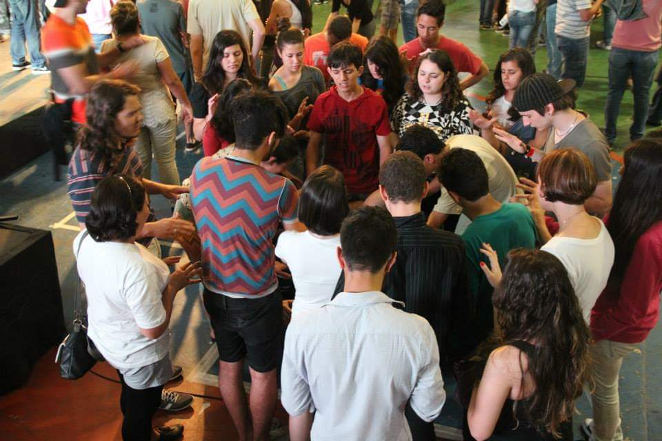
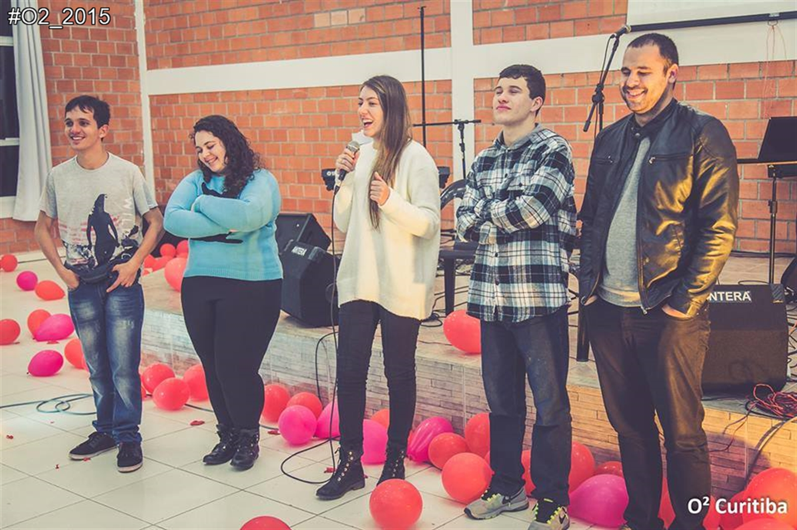
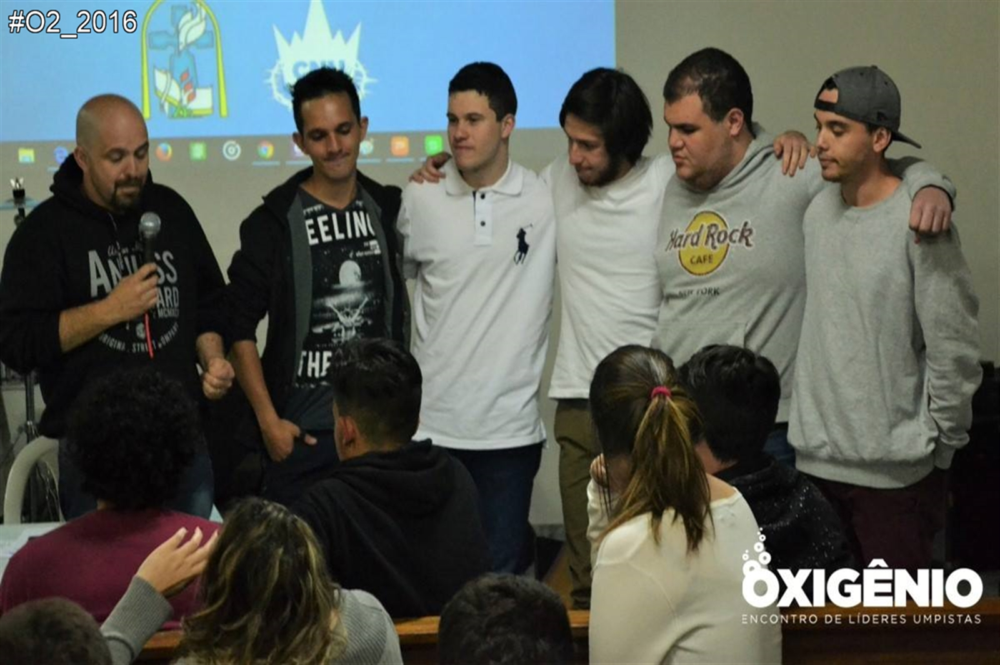
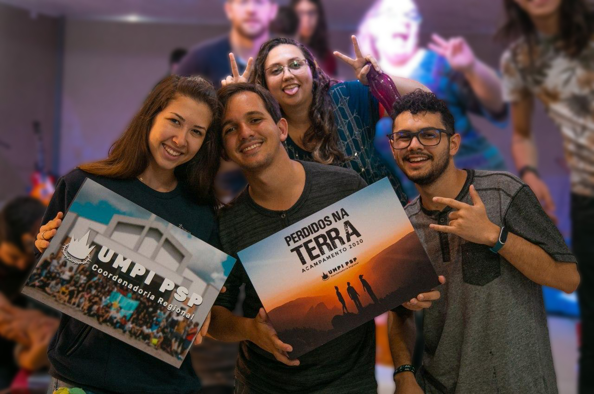

O começo da nova geração
Este foi um dos momentos principais para nós! Foi este encontro que permitiu uma nova fagulha de esperança e reacendeu a vontade de recuperar esta organização da mocidade que havia se perdido.
 2015Primeira Equipe
Nesta primeira equipe de tivemos a Paola Santos, a Taina Leal, o Luis Guilherme, o Henrique Titi e o Adrian Cola.
 2015 - 2016Segunda Equipe
Na segunda chapa, pudemos contar com o Paulo Moresca, o Cleuber Peixoto(Juninho), o Matheus Felipe, o Luis Guilherme e o Henrique Titi.
 2017 - 2018Equipe Atual
Por fim, atualmente contamos com o André Jeller, a Laís Selleti a Bianca Meira e o Luis Guilherme.
 2019 - 2020E agora? Qual será o próximo passo?
Este espaço fica reservado para o futuro da UMPI em nosso presbitério. E quem sabe você não é um dos próximos líderes a estar à frente de tudo isso?
2020...